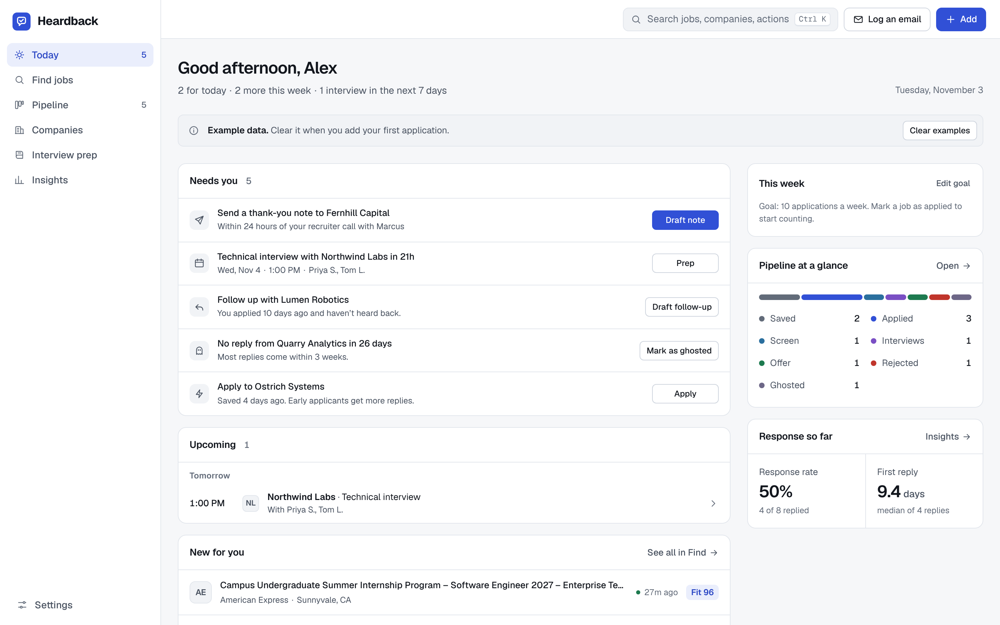
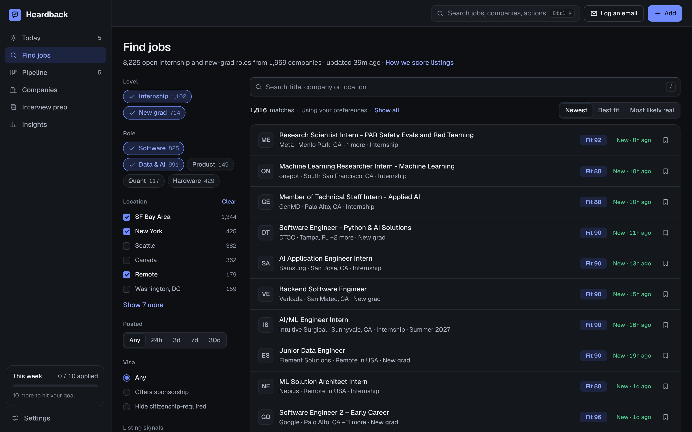
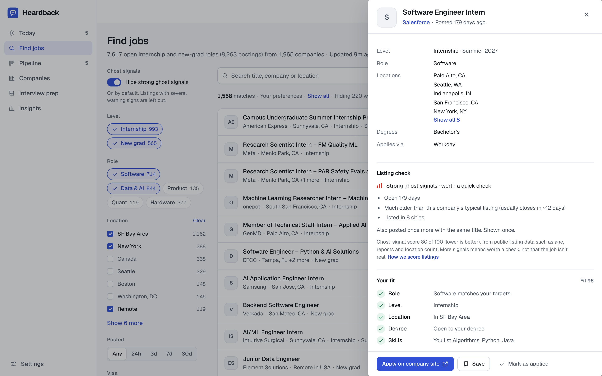
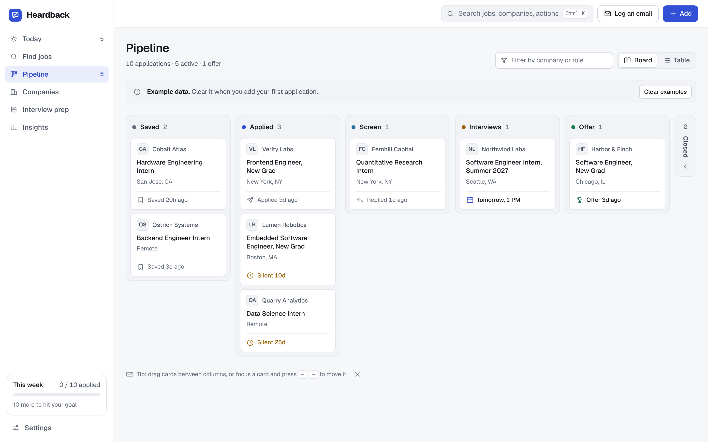
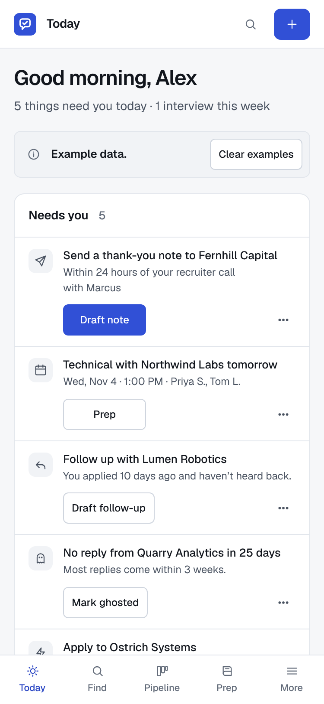
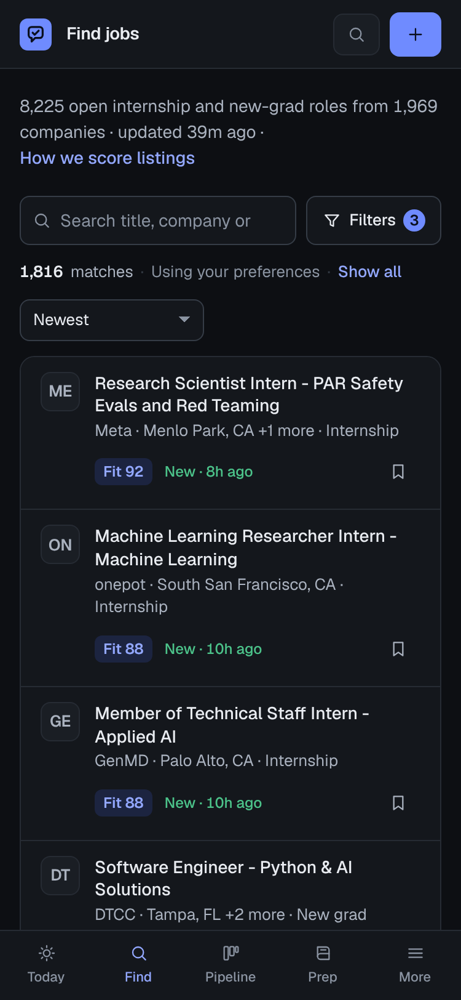
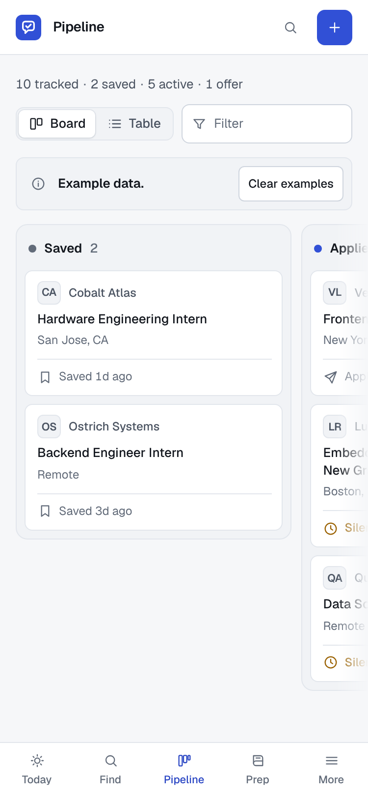
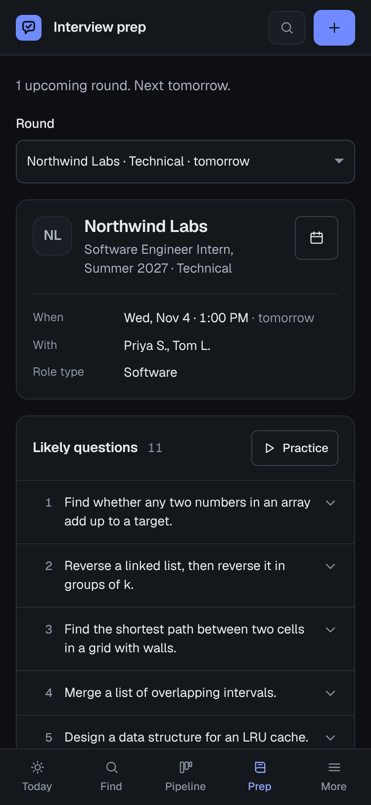

Private to you until you share it from the page's Share menu.
ochen30/heardback (empty). This session can't create repos, and neither name existed tonight. Full git history is ready to push.boards-api.greenhouse.io, api.lever.co, api.ashbyhq.com. Then the ready-made script pulls 822 company boards directly, with full job descriptions.







Verified what an Artifact page can and can't do, found that this environment blocks the job-board APIs, and found a reachable real data source. Renamed the app from Ghosted to Heardback.
Design system (Geist, cool neutrals, one cobalt accent, full dark mode), app shell, command palette, local-first store, nudges engine, data pipeline with ghost signals, competitor scan.
Four agents built Find, Pipeline, Today/Insights and Prep/Onboarding/Settings in parallel. First publish.
Add to calendar (Google Calendar connector or .ics), email parser accuracy, core fixes.
Design review 1 scored 6.3. Removed noise everywhere. QA found 32 bugs; fixed every crash and broken feature.
Review 2 scored 7.4. Calmer layouts, tablet breakpoints, rounds as summaries. New: posting-taken-down detection, season-closing nudges, PDF resumes, new since your last visit.
Mock interview with Claude, bulk actions, command palette context actions, How we score listings.
Review 3 scored 8.1. One vocabulary for signals, softer selection, simpler mock interview. Share-your-progress card.
Review 4 scored 8.6. Quieter fit and freshness, typography, raised dark overlays. QA round 2 (2,280 checks): no crash or broken-feature bugs left.
An agent played a stressed intern-hunting student through 8 real tasks. Fixed: silence counted from the applied date, change-date on apply, confirm-your-interview task, ghost signals hidden by default with an honest count, onboarding survives reloads, mobile quick add.
CSV import preview with stage mapping, stage-aware nudges after interviews, strict level and location matching, US-only Remote, two-line mobile count bar, wrapping toasts.
Design review 6 scored 9.0. Zero axe-core WCAG 2 A/AA violations on every route and overlay in both themes. Silence respects scheduled rounds; share card opens on a meaningful period.
Full detail: CHANGELOG.md in the repo bundle below.
Every published version passed Playwright runs at 375, 768 and 1440 px in light and dark mode with zero console errors and no horizontal overflow. The end-to-end suite drives the real UI (onboarding, search, saving, drag and drop, keyboard, bulk actions, email logging with 11 realistic emails, rounds, nudges, Insights math, export/import round-trips, corrupt data, 300 applications, focus and Escape behavior) at phone and desktop widths, with and without Claude: 2,428 checks, all passing in the final run. An axe-core scan finds zero WCAG 2 A/AA violations on every screen and overlay in both themes. Three usability tests (an intern hunter on desktop, a new grad on a phone, a power user with 42 applications) drove the last rounds of fixes.
| Product | Price | Ghost-job check | Per-round tracking | Email logging | Nudges | Reply data |
|---|---|---|---|---|---|---|
| Heardback | Free | Per listing, with reasons | Yes | Paste an email | Today view | Opt-in, needs backend |
| Teal | $29/mo | No | Stages, notes | No | Networking | No |
| Huntr | $40/mo Pro | Unclear | Yes | No | Some | No |
| Simplify | $39.99/mo+ | Age, closed marker | No | No | Unclear | No |
| Jobright | ~$40/mo | Claimed | No | No | Unclear | Internal only |
| Free / Premium | Reposted label | No | No | No | Responsiveness badge | |
| Remote Rocketship / Klepify | Free | Score, no reasons | No | No | No | No |
| didtheyghost.me / DidTheyGhostYou | Free | No | Community | No | No | Community reports |
The job feed is a commodity; Heardback doesn't try to win on breadth. Its edge is honesty and the loop: explained ghost signals on every listing, every round tracked, a Today list that tells you what to do, and (with a backend) early-career reply data nobody publishes. Prices from third-party sources; check before quoting.
Edit the first line to your own experience before posting.
Suggested images: Find with the ghost-signal column, a job panel showing "Posted and closed 7× before", the pipeline board, and Today on a phone (all in the Screens section above).
The GitHub repo didn't exist tonight, so the source ships here: the built app (single file), data refresh script, direct ATS fetcher, changelog and engineering notes. The full git history is in the session workspace, ready to push.
Built overnight by Claude with a team of agents: builders working in parallel, seven design reviews, three usability tests, an accessibility audit and a QA suite of 2,428 automated checks. Nothing was posted publicly.